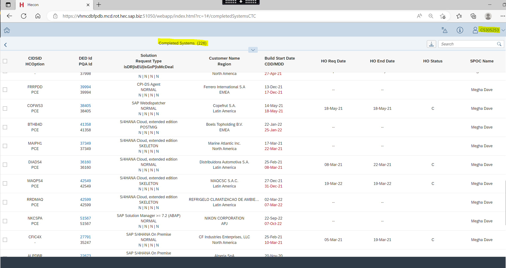

I started my career as a Cloud Technical Consultant where my every day work life included integrating various kinds of cloud based solutions. A majority of them were Linux based ERP solutions such as :
Being the technical champion of my team I had a troubleshoot a lot of problems and issues such as, the linux application servers not coming into the start state, unstable behavious by the servers, housekeeping of the servers, etc. and had to give knowledge transitioning to the juniors in my team. During the absence of my Team Lead, I had to co-ordinate and make sure that the systems were prioritized based on their criticality and customer request. I had to attend a lot of meetings with the stakeholders to finalize the customer requirements and needs regarding how the systems should be built and delivered to them. I had the opportunity to build both Greenfield(Sandbox) and Brownfield(database already having customer data in it) based solutions.
